专题08 一元一次方程含参运算（7种类型56道）

考点01 利用一元一次方程定义求参数
考点02 已知方程的解求参数
考点03 同解问题
考点04 整数解问题
考点05 解为相反数
考点06 无解问题
考点07 错解还原

考点01 利用一元一次方程定义求参数
1．若方程 是关于
是关于 的一元一次方程，则
的一元一次方程，则 是（ ）
是（ ）
A． B．
B． C．
C． D．1或
D．1或
【答案】C
【分析】本题考查了一元一次方程的定义，理解一元一次方程的定义是解题的关键．根据一元一次方程的定义，由
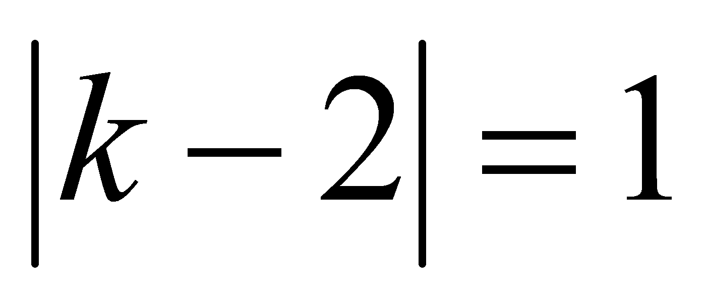
且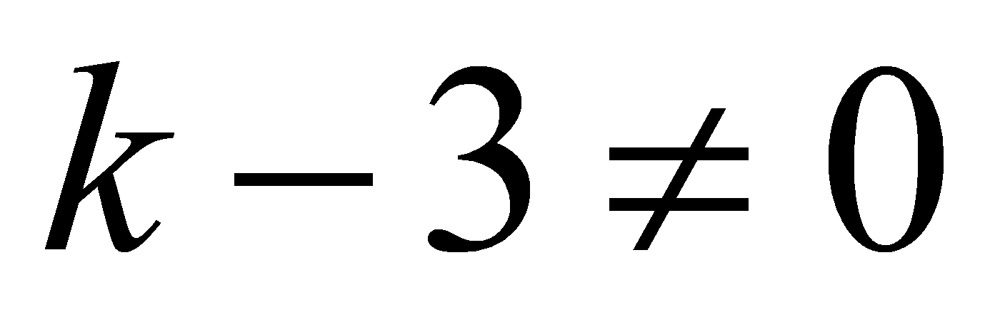
【详解】解： 方程
方程
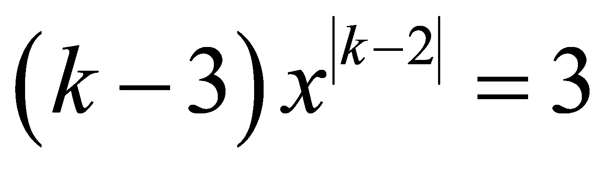
是关于的一元一次方程， 且，
且，
解得 ，
，
故选：C．
2．若关于x的方程 是一元一次方程，则k的值为（ ）
是一元一次方程，则k的值为（ ）
A． B．1 C．0 D．0或
B．1 C．0 D．0或
【答案】A
【分析】本题主要考查了一元一次方程的定义，只含有一个未知数，且未知数的次数为1的整式方程叫做一元一次方程，据此列式求解即可．
【详解】解：∵关于x的方程是一元一次方程，
∴
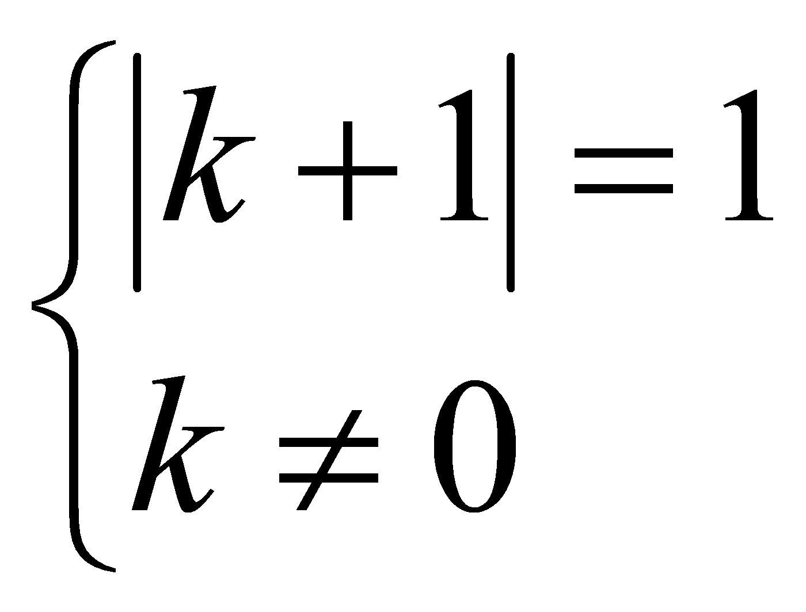
，∴
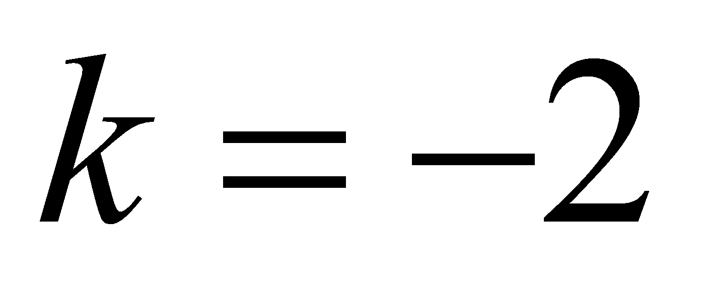
，故选：A．
3．若关于的方程
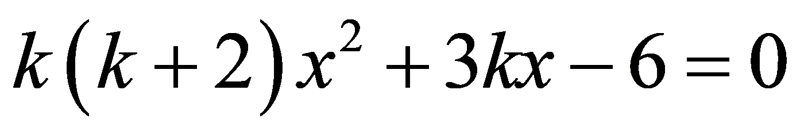
是一元一次方程，则的值为（ ）A．0 B． C．0或 D．一切有理数
【答案】B
【分析】本题考查一元一次方程的定义，掌握一元一次方程的定义是解题的关键．
根据一元一次方程的定义，得到
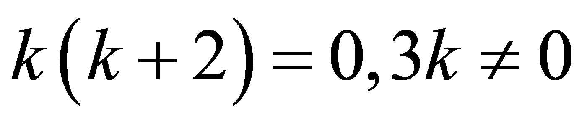
，即 或
或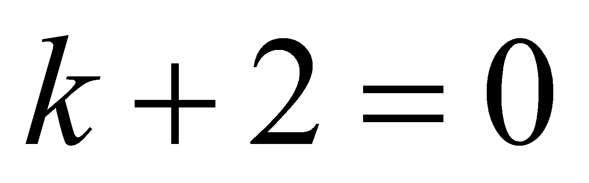
，且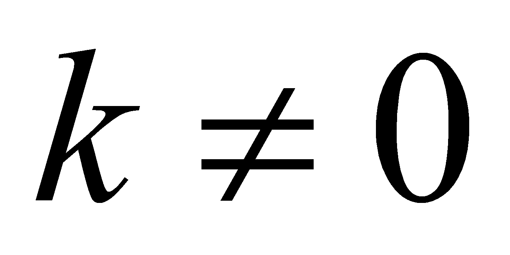
，解得，即可解答．【详解】解：∵关于的方程 是一元一次方程，
是一元一次方程，
∴，
即或，且，
解得．
故选B．
4．若
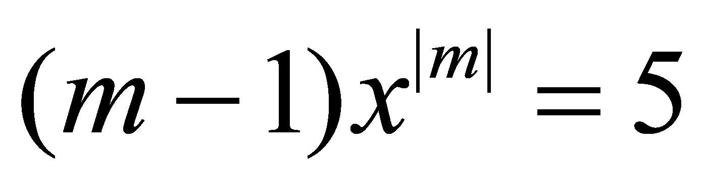
是关于x的一元一次方程，则m的值是（ ）A． B．
B． C．1 D．2
C．1 D．2
【答案】B
【分析】本题考查了一元一次方程的定义，解决问题的关键是熟练掌握一元一次方程的定义．
根据次数为，系数不等于 ，即可求出.
，即可求出.
【详解】解：∵是关于的一元一次方程，
∴
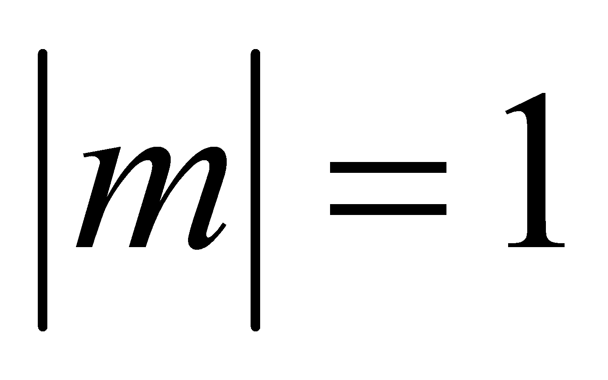
且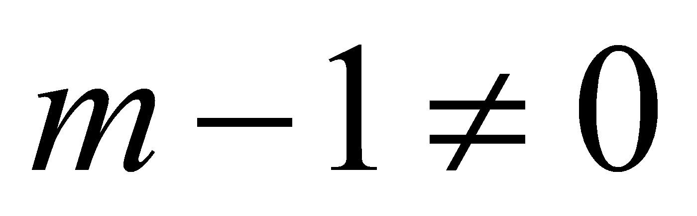
，解得：
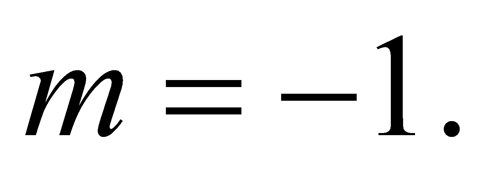
故选：B ．
5．若方程 是关于x的一元一次方程，则代数式
是关于x的一元一次方程，则代数式 的值为（ ）
的值为（ ）
A．2 B．0 C．0或2 D．
【答案】B
【分析】本题主要考查一元一次方程的运用，根据一元一次方程的定义，确定未知数的次数为1且系数不为零，从而求出m的值，再代入代数式计算．
【详解】解：方程
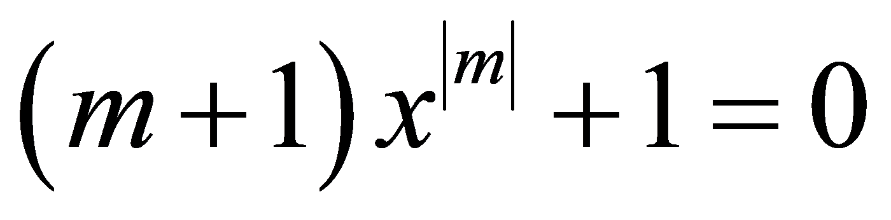
为一元一次方程，∴的指数为1，即
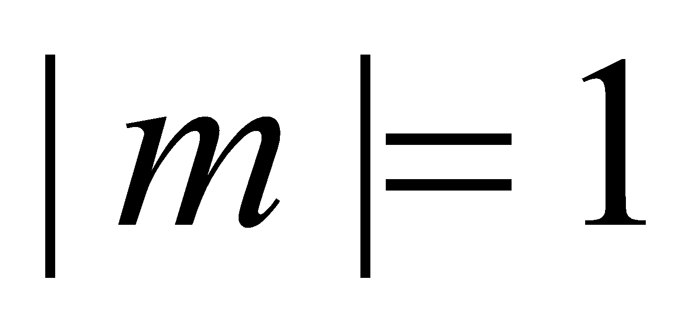
，解得 或
或
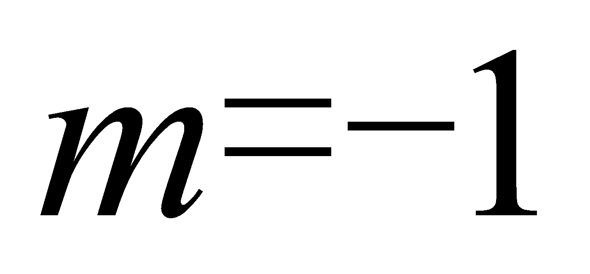
，方程中的系数为
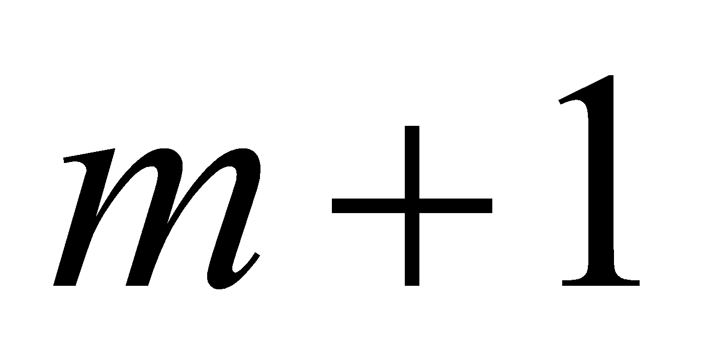
，需满足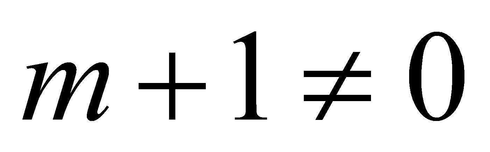
，即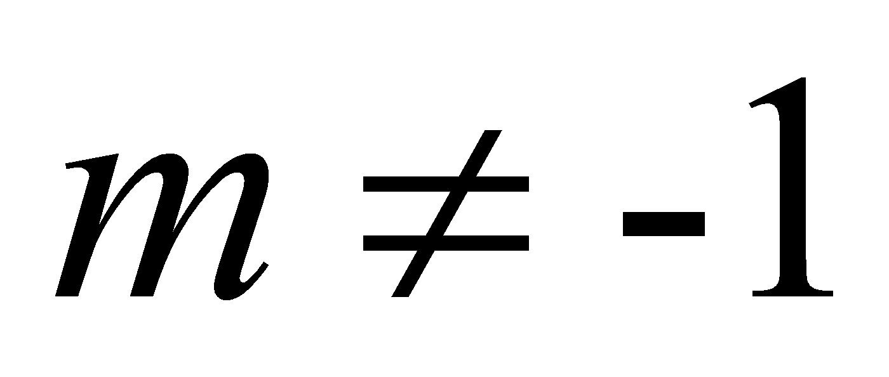
，∴排除，仅保留，
∴将代入代数式
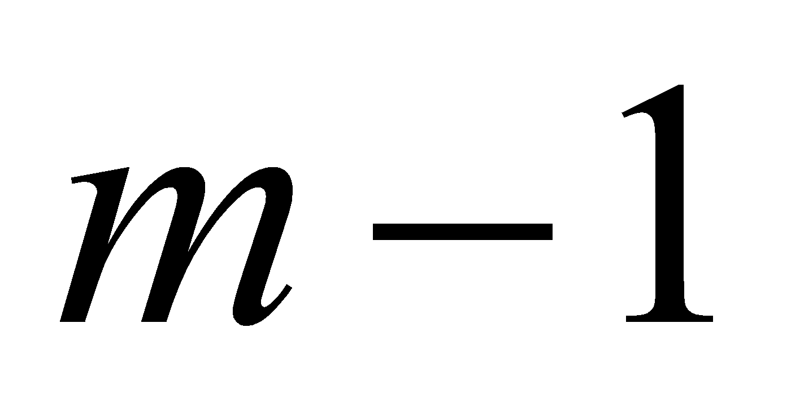
，原式 ，
，故选：B．
6．已知方程 是关于的一元一次方程，则
是关于的一元一次方程，则 的值是（ ）
的值是（ ）
A．1 B．2 C．3 D．4
【答案】D
【分析】本题考查了一元一次方程的定义．
根据一元一次方程的定义，未知数x的指数必须为1，且系数不为0，由此建立关于m的方程求解即可．
【详解】解：∵是关于的一元一次方程，
∴
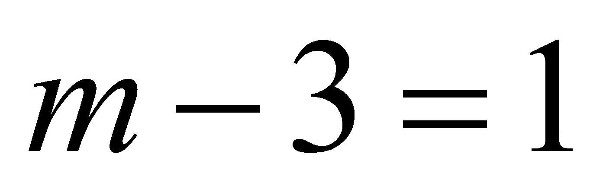
，解得 ，
，
故选：D．
7．如果方程 是关于x的一元一次方程，那么m的值是（ ）
是关于x的一元一次方程，那么m的值是（ ）
A．0 B．2 C． D．1
【答案】B
【分析】本题主要考查一元一次方程的定义，掌握等式两边是只含有一个未知数且未知数的次数为1的整式的方程叫一元一次方程成为解题的关键．
直接根据一元一次方程的定义列式求解即可解答．
【详解】解：∵方程
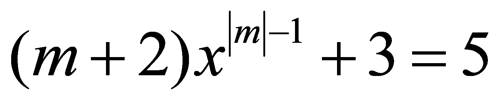
是关于x的一元一次方程，∴
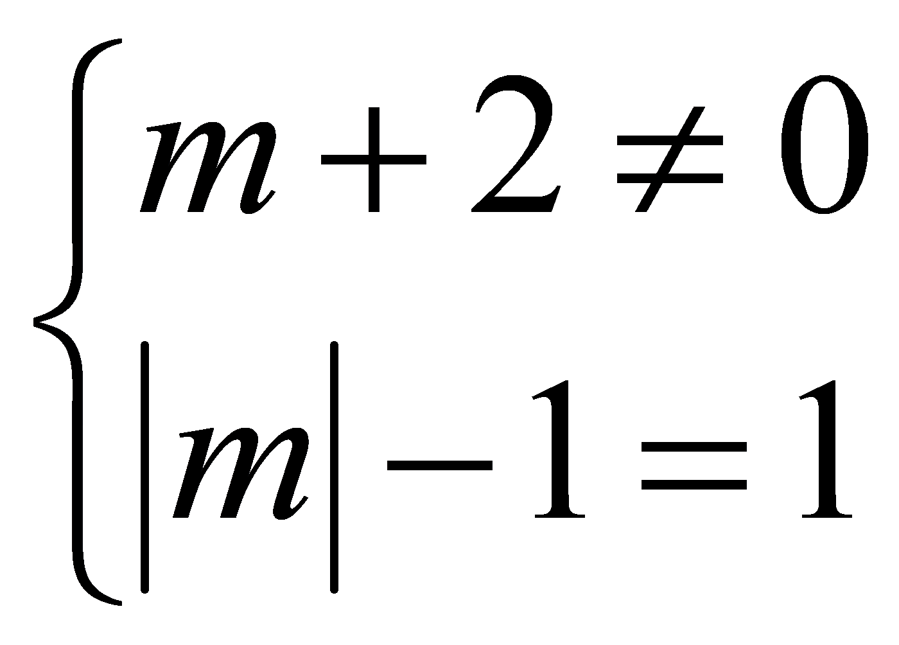
，解得： ．
．故选B．
8．关于x的方程 是一元一次方程，则m的值是（ ）
是一元一次方程，则m的值是（ ）
A．2 B．0 C．1 D．0或2
【答案】B
【分析】本题考查了一元一次方程的定义，绝对值，正确掌握一元一次方程的定义，绝对值的定义是解题的关键．
根据一元一次方程的定义得到 ，
， ，进而求解即可．
，进而求解即可．
【详解】∵关于x的方程是一元一次方程，
∴，
∴
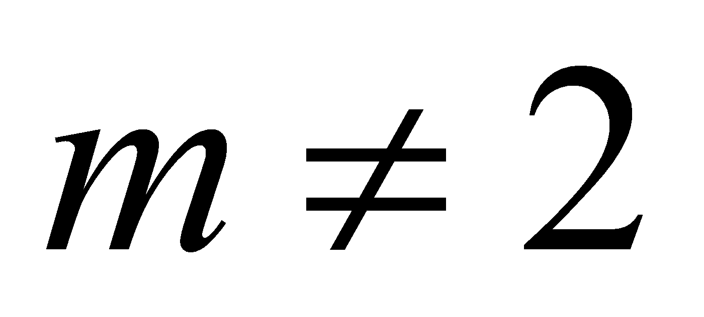
，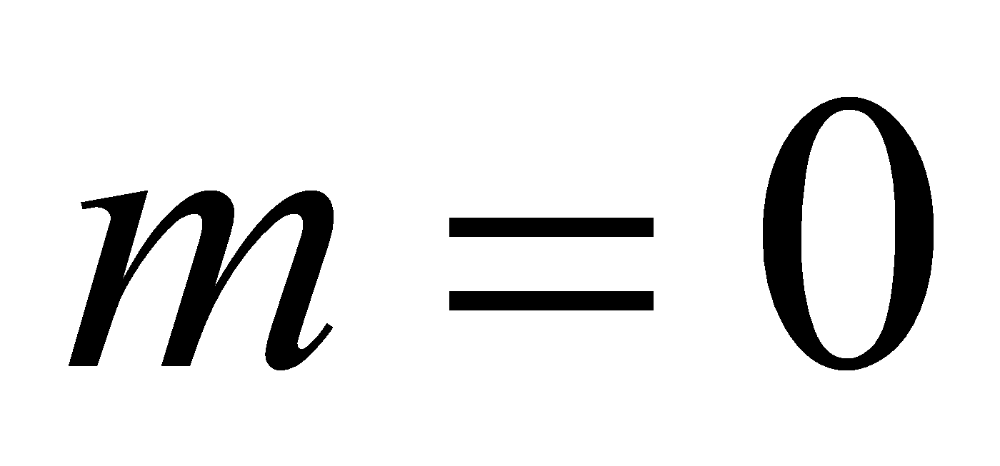
或2∴．
故选：B．
考点02 已知方程的解求参数
9．若 是方程
是方程 的解，则m的值是（ ）
的解，则m的值是（ ）
A． B．0 C．2 D．8
B．0 C．2 D．8
【答案】B
【分析】本题考查方程的解，解一元一次方程，利用方程的解是使方程成立来求未知数的值是解题的关键．将 代入方程，得出一个关于的方程，求出方程的解即可．
代入方程，得出一个关于的方程，求出方程的解即可．
【详解】解：把代入方程 ，
，
得
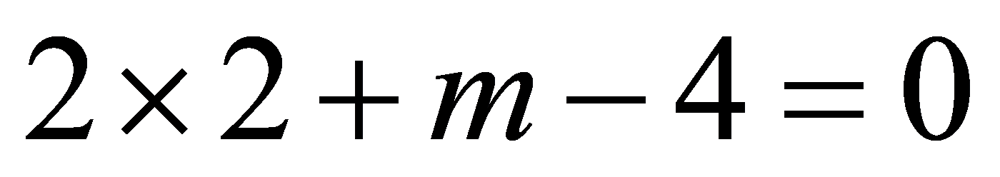
，即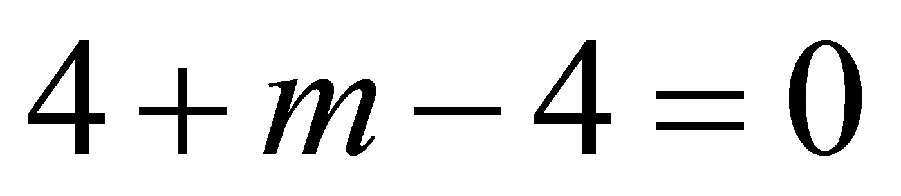
，解得 ．
．
故选：B．
10．已知关于x的方程 的解是，则a的值为（ ）
的解是，则a的值为（ ）
A．2 B．3 C．4 D．5
【答案】D
【分析】本题主要考查一元一次方程的解，熟练掌握一元一次方程的解是解题的关键；将已知解代入方程，直接求解a的值即可．
【详解】解：把代入方程得
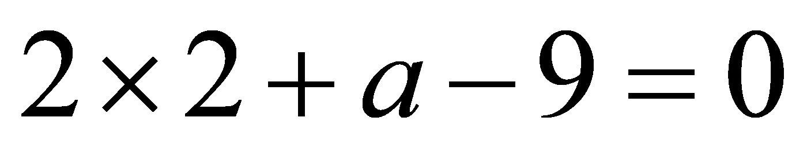
，解得： ；
；
故选：D．
11．若 是关于的方程
是关于的方程
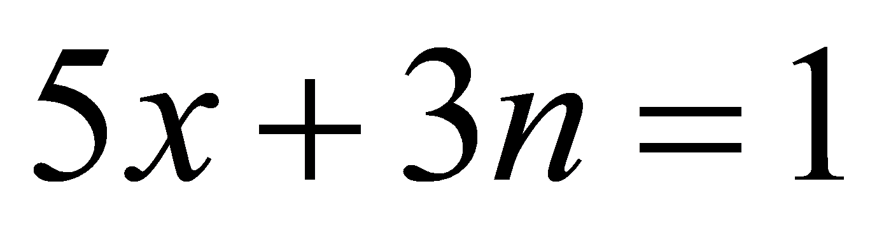
的解，则 （ ）
（ ）A． B．
B． C．3 D．
C．3 D．
【答案】D
【分析】本题考查了一元一次方程的解，熟练掌握一元一次方程的解的定义是解题关键．将代入方程可得一个关于 的一元一次方程，解方程即可得．
的一元一次方程，解方程即可得．
【详解】解：∵是关于的方程的解，
∴
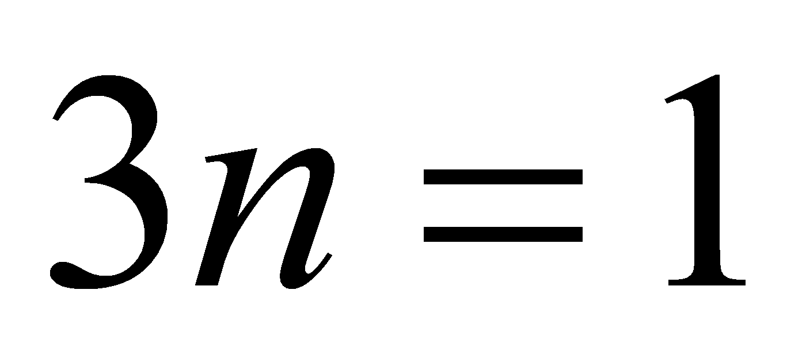
，解得 ，
，
故选：D．
12．若 是关于的一元一次方程
是关于的一元一次方程
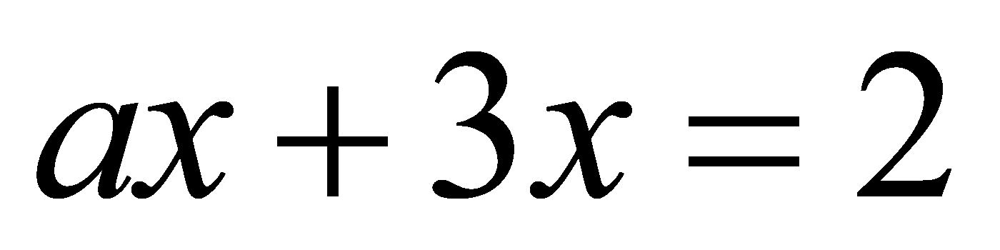
的解，则 的值是（ ）
的值是（ ）A． B．5 C．1 D．
【答案】A
【分析】此题考查了一元一次方程的解，方程的解即为能使方程左右两边相等的未知数的值．将代入方程，得到关于a 的一元一次方程，解出a的值．
【详解】解：∵是方程的解，
∴ 代入得：
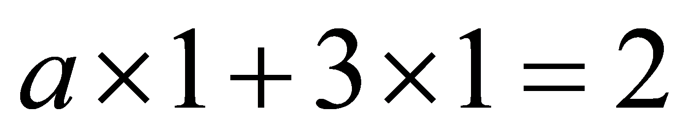
，即
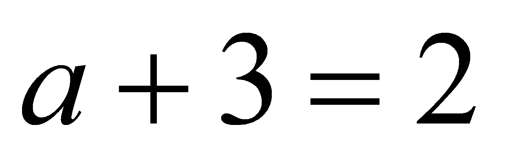
，∴
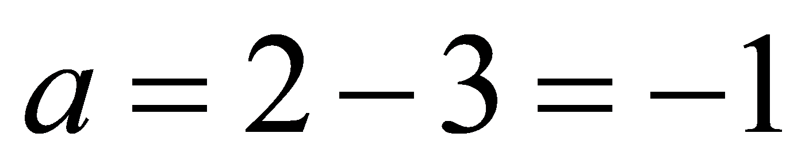
，因此，a 的值为，
故选：A．
13．已知 是方程
是方程 的解，则的值是（ ）
的解，则的值是（ ）
A．3 B． C．2 D．
C．2 D．
【答案】B
【分析】本题考查了方程的解的定义及一元一次方程的求解，解题的关键是将方程的解代入原方程，转化为关于未知数的一元一次方程进行求解．先将代入方程，得到关于的一元一次方程；再通过移项、系数化为1求出的值，最后对照选项确定答案．
【详解】解：∵是方程的解，
∴将代入方程得
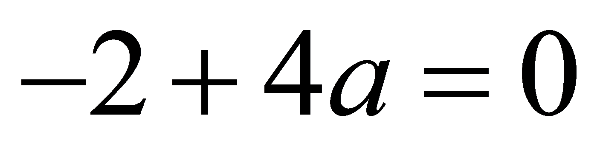
；移项，得
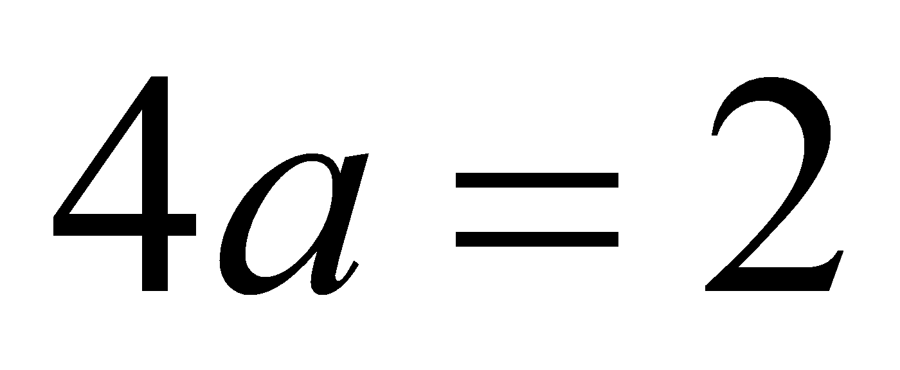
；系数化为1，得
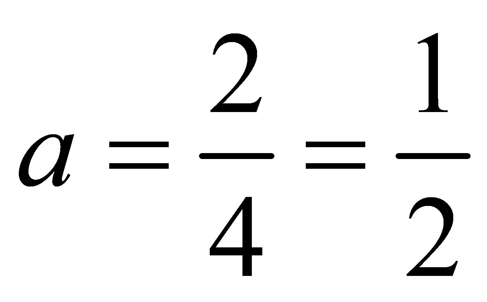
；对照选项，的值为 ，对应选项B；
，对应选项B；
故选：B．
14．若 是关于x的方程
是关于x的方程
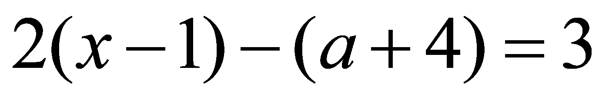
的解，则a的值是（ ）A． B． C． D．
B． C． D．
【答案】C
【分析】该题考查了一元一次方程的解，将代入方程，解关于a的一元一次方程即可．
【详解】解：将代入方程
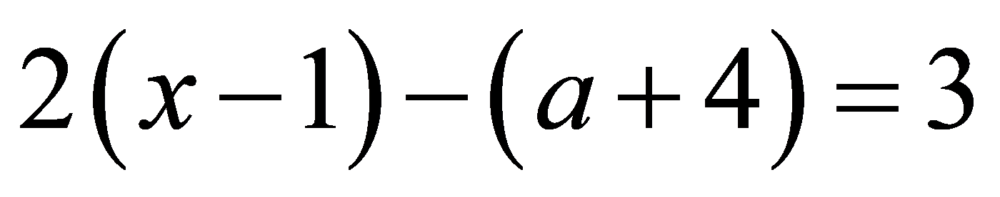
，得：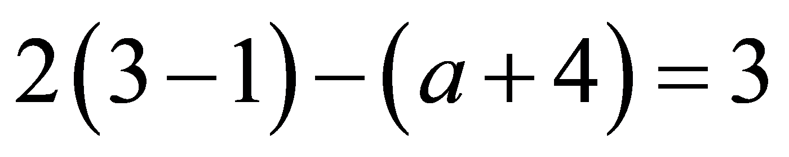
，解得： ，
，
故选：C．
15．若方程 的解是
的解是 ，则β的值为（ ）
，则β的值为（ ）
A． B．4 C．0 D．
【答案】D
【分析】本题考查了解一元一次方程和一元一次方程的解的应用，能得出关于 的一元一次方程是解此题的关键．把代入方程计算即可求出的值．
的一元一次方程是解此题的关键．把代入方程计算即可求出的值．
【详解】解：把代入方程得：
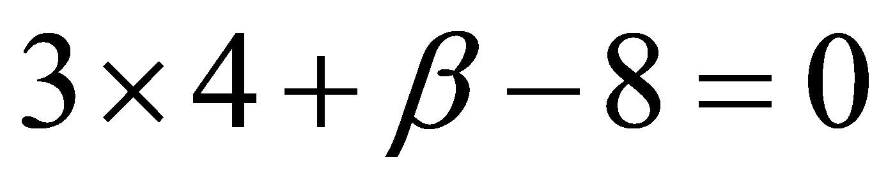
，解得：
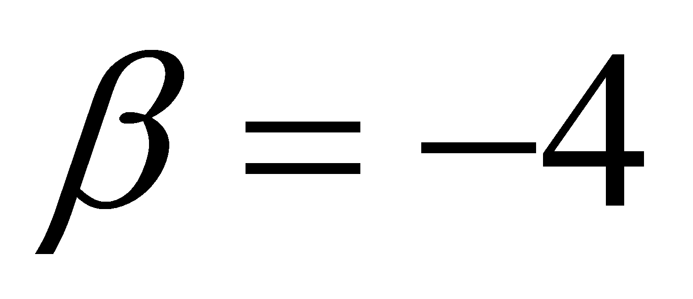
，故选：D．
16．若是关于的方程 的解，则的值是（ ）
的解，则的值是（ ）
A． B．0 C．2 D．3
【答案】A
【分析】本题考查一元一次方程的解，将代入中解得a的值即可．
【详解】解：∵是关于x的方程的解，
∴
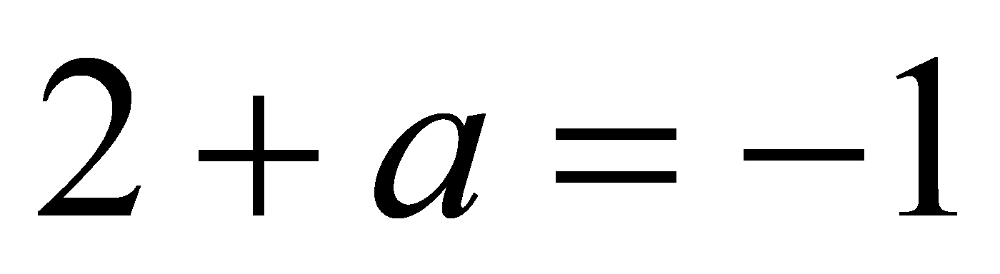
，解得：，
故选：A．
考点03 同解问题
17．若方程 与关于的方程
与关于的方程
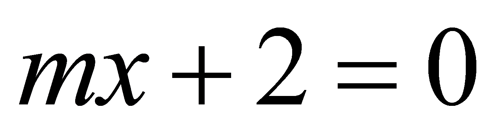
的解相同，则的值为（ ）A． B． C． D．
D．
【答案】B
【分析】此题主要考查了一元一次方程的解，先求出方程的解，再把的值代入方程，求出的值即可．
【详解】解：，
解得：，
方程与关于的方程的解相同，
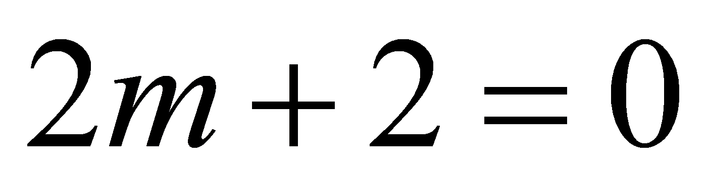
，解得： ，
，
故选：B．
18．若方程 的解与关于的方程
的解与关于的方程 的解相同，则的值为（ ）
的解相同，则的值为（ ）
A． B．
B．
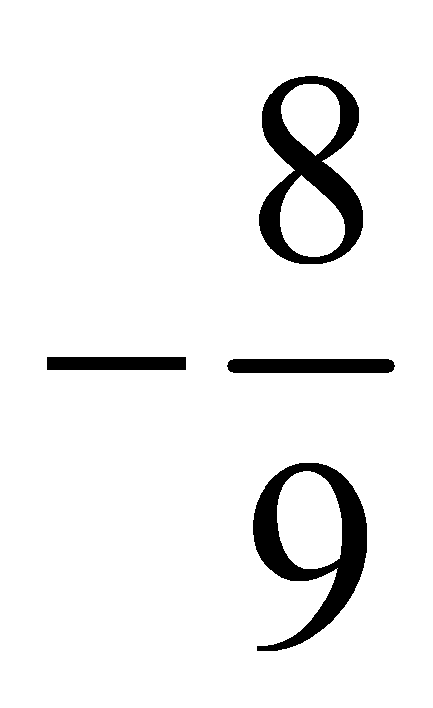
C． D．
【答案】C
【分析】此题考查同解方程，先解方程
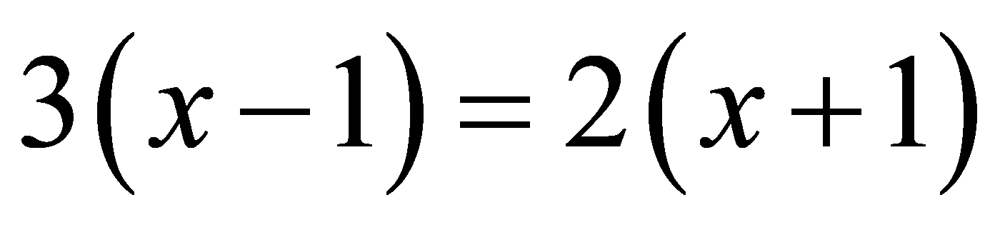
得到 的值，再代入方程 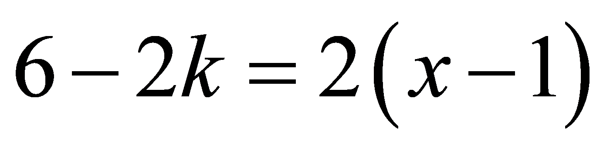
求解．【详解】∵ 方程 ，
∴ 展开得
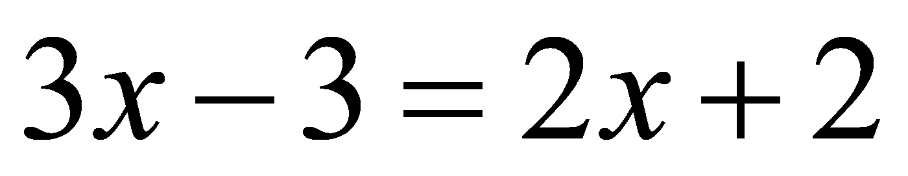
，∴ 移项得
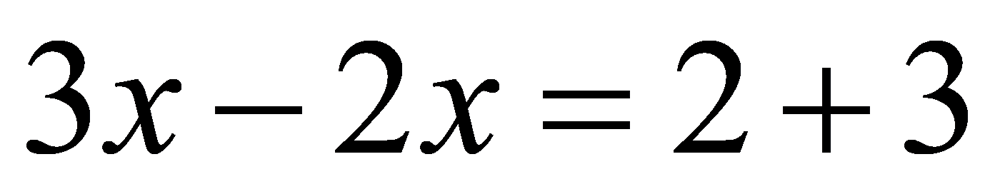
，∴  ，
，
∵ 两方程解相同，
∴ 将 代入 ，
∴ ，
∴ ，
∴ ，
∴  ，
，
故 的值为 ，
故选 C．
19．若方程 与关于x的方程
与关于x的方程 的解相同，则a的值为（ ）
的解相同，则a的值为（ ）
A．2 B．1 C．0 D．－1
【答案】B
【分析】本题主要考查同解方程，先求出方程的解，再代入方程中求解.
【详解】解：∵方程，
∴，
∵两个方程的解相同，
∴将代入，
得，
∴ ，
，
故选：B．
20．若关于x的方程与的解相同，则m的值是（ ）
A．7 B． C．1 D．
C．1 D．
【答案】A
【分析】本题主要考查解一元一次方程，已知一元一次方程的解求参数，熟练掌握解一元一次方程是解题的关键．
先根据题意计算的解为 ，将代入，即可求出答案．
，将代入，即可求出答案．
【详解】解：，
解得，
将代入，
解得 ，
，
故选：A．
21．关于x的一元一次方程 与的解相同，则a的值为（ ）
与的解相同，则a的值为（ ）
A． B．1 C．7 D．
【答案】A
【分析】本题考查了一元一次方程的解以及同解方程，解题的关键是求出第一个方程的解并代入第二个方程求解．
先求解方程得到的值，再将其代入方程，进而求出的值．
【详解】解：解方程，两边同时除以2，得．
把代入中，得到，即．
两边同时减去4，得．
所以的值为，
故选：A．
22．若方程和 的解相同，则的值为（ ）
的解相同，则的值为（ ）
A． B． C． D．
D．
【答案】A
【分析】本题考查了方程的解，解一元一次方程，熟练掌握解一元一次方程的步骤是解题的关键；
先求出第一个方程的解，把方程的解代入第二个方程得出关于的一元一次方程求解即可．
【详解】解：
移项得：
合并同类项：
系数化为得：，
将代入，
可得：
移项得：
合并同类项：
系数化为，可得： ；
；
故选：A
23．已知关于的方程 与
与 的解相同，则的值为（ ）
的解相同，则的值为（ ）
A． B．30 C． D．7
B．30 C． D．7
【答案】A
【分析】本题考查了解一元一次方程，熟练掌握解一元一次方程的步骤（去分母、去括号、移项、合并同类项、系数化为1）是解题关键．先解方程可得 ，再将代入方程可得一个关于的方程，解方程即可得．
，再将代入方程可得一个关于的方程，解方程即可得．
【详解】解：，
，
，
，
将代入方程得：，
解得，
故选：A．
24．若方程 的解与关于x的方程的解相同，则k的值为（ ）
的解与关于x的方程的解相同，则k的值为（ ）
A． B． C． D．
D．
【答案】B
【分析】本题考查方程的解及解一元一次方程，熟练掌握解一元一次方程方法是解题的关键．
先解方程，然后代入求关于方程中即可．
【详解】解：解方程，
解得：，
把代入方程得：，
解得：；
故选：B
考点04 整数解问题
25．已知关于的方程 的解是整数，则满足条件的所有整数的绝对值的和为 ．
的解是整数，则满足条件的所有整数的绝对值的和为 ．
【答案】
【分析】本题考查一元一次方程的整数解问题，先解方程，然后结合整数解求出符合条件的的值，再计算绝对值的和即可．正确求出方程的解是解题关键．
【详解】解：解方程，
得： ，
，
∵关于的方程的解是整数，
∴ 或或或
或或或 ，
，
解得：或或或 ，
，
∴所有整数的绝对值的和为：．
故答案为：．
26．已知关于的方程 有正整数解，则满足条件的所有整数的值为 ．
有正整数解，则满足条件的所有整数的值为 ．
【答案】0或6或8
【分析】本题考查了解一元一次方程，熟练掌握方程的解法是解题关键．先解一元一次方程可得，再根据为正整数求解即可得．
【详解】解：，
，
，
∵关于的方程有正整数解，
∴为正整数，
∴或或，
解得 或或，
或或，
故答案为：0或6或8．
27．已知关于的方程 有正整数解，则满足条件的所有整数的值为 ．
有正整数解，则满足条件的所有整数的值为 ．
【答案】0或2
【分析】本题主要考查了根据方程的解的情况求参数，解一元一次方程，先解方程得到，根据原方程的解为正整数可推出是正整数，则 或，解方程即可得到答案．
或，解方程即可得到答案．
【详解】解：∵，
∴，
当时，则，故这种情况不存在，
当时，则，
∵关于的方程有正整数解，
∴是正整数，
又∵k为整数，
∴或，
解得或 ，
，
故答案为：0或2．
28．若整数，关于的一元一次方程 有非正整数解，那么符合条件的所有整数之和为 ．
有非正整数解，那么符合条件的所有整数之和为 ．
【答案】
【分析】本题主要考查了一元一次方程的特解问题，表示出解，进行合理讨论求解是解题的关键．先解方程，用a表示x，根据解的非正整数解，讨论求解即可．
【详解】解：，
去括号得，，
移项得，，
合并同类项得，
解得，
有非正整数解，
，
，
故答案为：．
29．关于的方程的解为正整数，求满足条件的整数之和为 ．
【答案】10
【分析】本题考查了一元一次方程，熟练掌握解一元一次方程的一般步骤，理解方程有正整数解的含义是解题的关键．
先解得，再根据解为正整数，得到的值可为1、2、4，从而得到值，进而求出满足条件的之和．
【详解】解：，
解得：，
关于的方程的解为正整数，
或或，
解得： 或
或 或，
或，
，
满足条件的之和为：10，
故答案为：10．
30．若关于的方程的解为整数，则符合条件的所有整数的值之和为 ．
【答案】
【分析】本题考查一元一次方程的解，解一元一次方程，熟练掌握解一元一次方程的解和整数的特征是解题的关键．先解方程求解，得，再利用为整数，解为整数，得出， ，，即可求解．
，，即可求解．
【详解】解：，
去分母，得：，
化简，得：，
解得：，
∵为整数，解为整数，
∴，，，
解得： ，，，，
，，，， ，
， ，
，
和为：，
故答案为：．
31．已知为整数，关于的方程 的解为非负整数．求满足条件的值的和 ．
的解为非负整数．求满足条件的值的和 ．
【答案】
【分析】本题主要考查方程的整数解，先求出含有参数的方程的解，并列举出它是整数的所有可能性，再求出的整数值，最后求出这些值之和即可．
【详解】解：，
∴，
∴，
∴，
∵为整数，方程的解为非负整数，
∴是非负整数，
∴或或，
解得： 或（不符合题意舍去）或
或（不符合题意舍去）或 ，
，
∴符合条件的值的和为．
故答案为：．
32．已知关于的一元一次方程 的解是正整数，则符合条件的所有整数的值的积为 ．
的解是正整数，则符合条件的所有整数的值的积为 ．
【答案】0
【分析】本题考查了解一元一次方程，熟练掌握方程的解法步骤是解题关键．先解一元一次方程可得，再根据方程的解是正整数可得符合条件的所有整数的值，由此即可得．
【详解】解：，
，
，
，
，
∵关于的一元一次方程的解是正整数，
∴是正整数，
∴符合条件的所有整数的值为，
∴符合条件的所有整数的值的积为，
故答案为：0．
考点05 解为相反数
33．方程 的解与关于x的方程的解互为相反数，则k的值为 ．
的解与关于x的方程的解互为相反数，则k的值为 ．
【答案】
【分析】本题考查了解一元一次方程、相反数，先解两个一元一次方程并结合相反数的定义可得 ，求解即可．
，求解即可．
【详解】解：解方程，得 ，
，
解方程得，
因为两个方程的解互为相反数，
所以，
解得 ，
，
故答案为：．
34．若关于的方程 的解与方程的解互为相反数，求的值．
的解与方程的解互为相反数，求的值．
【答案】
【分析】本题主要考查了解一元一次方程和相反数，先求得方程的解，再根据题意得到方程的解，即可求得答案．
【详解】解：，移项合并同类项得，，
系数化为1得，，
方程的解与方程的解互为相反数，
方程的解 ，
，
则，
解得 ．
．
故答案为：．
35．如果方程 的解与关于x的方程
的解与关于x的方程 的解互为相反数，那么a的值为 ．
的解互为相反数，那么a的值为 ．
【答案】4
【分析】本题主要考查了解一元一次方程，熟知解一元一次方程的步骤是解题的关键．
先解出第一个方程的解，求出其相反数后代入第二个方程可得到关于的一元一次方程，解出即可．
【详解】解：，
去分母得：，
去括号得：，
移项得：，
合并同类项得：，
系数化为得： ，
，
将代入，
得：，
去括号得：，
移项得：，
合并同类项得：，
系数化为得：．
故答案为：．
36．关于x的一元一次方程 的解与方程的解互为相反数，则满足条件的a的值为 ．
的解与方程的解互为相反数，则满足条件的a的值为 ．
【答案】
【分析】本题考查的是一元一次方程的解法，方程的解的含义，解方程，先求出方程的解，然后把求出的解的相反数代入方程，从而求出a即可．
【详解】解：，
去分母得：，
去括号得：，
∴，
解得：，
∵关于x的一元一次方程的解与方程的解互为相反数，
∴关于x的一元一次方程的解是，
把代入方程得：
，
∴，
∴，
∴，
解得： ，
，
故答案为：．
37．如果方程 和方程
和方程 的解互为相反数，那么的值为 ．
的解互为相反数，那么的值为 ．
【答案】
【分析】此题考查了解一元一次方程，方程的解，先求出方的解，再将代入方程，再解关于a的方程即可．
【详解】解：∵，
∴，
∵方程和方程的解互为相反数
∴将代入方程中，得
，
，
，
解得，
故答案为：．
38．若关于x的方程 的解与方程的解互为相反数，则k的值为 ．
的解与方程的解互为相反数，则k的值为 ．
【答案】/
【分析】本题考查方程的解的问题及参数的求解，解题的关键是分别求出两个方程的解，根据互为相反两个数和为0，列新方程求解．
分别解出两个方程的解用含k的字母表示，再根据互为相反数列式即可得到答案．
【详解】解：由题意得，
解方程得，
，
解方程得，
，
∵两个方程的解互为相反数，
∴ ，
解得．
故答案为：．
39．已知方程 的解与关于方程
的解与关于方程 的解互为相反数，则的值是 ．
的解互为相反数，则的值是 ．
【答案】4
【分析】本题考查了解一元一次方程和一元一次方程的解，相反数的含义等知识点，能得出关于k的一元一次方程是解此题的关键．先求出第一个方程的解是，把 代入第二个方程得出，求出k的值即可．
代入第二个方程得出，求出k的值即可．
【详解】解：解方程，得．
∵方程的解与关于x的方程的解互为相反数，
∴方程的解为，
∴，
∴ ，
，
∴．
故答案为4．
40．若关于的方程 的解与方程的解互为相反数，则的值为 ．
的解与方程的解互为相反数，则的值为 ．
【答案】
【分析】本题考查方程的解的问题及参数的求解，解题的关键是分别求出两个方程的解，根据互为相反两个数和为，列新方程求解．
分别解出两个方程的解用含的字母表示，再根据互为相反数列式即可得到答案．
【详解】解：由题意得：解方程，
解得；
解方程，
解得；
∵两个方程的解互为相反数，
，
解得：；
故答案为：
考点06 无解问题
41．如果关于的方程无解，那么满足的条件是 ．
【答案】
【分析】本题考查了一元一次方程的解，根据一元一次方程无解，可得答案，利用一元一次方程无解得出关于的方程是解题关键．
【详解】解：∵关于的方程无解，
∴，
解得： ，
，
故答案为：．
42．如果关于x的方程 无解，那么m的取值范围是 ．
无解，那么m的取值范围是 ．
【答案】/
【分析】本题主要考查了一元一次方程的解，解题时要能熟练掌握并理解．
依据题意，由一次方程无解，从而 ，故可得解．
，故可得解．
【详解】解：由题意，∵无解，
 ，
，
，
故答案为：．
43．关于x的方程 无解，那么m、n满足的条件是 ．
无解，那么m、n满足的条件是 ．
【答案】且
【分析】根据方程无解的条件即可解答．
【详解】解：∵，
当 ，
，
∴，
当，时，即 ；
；
此时方程有无数个解；
当，即时，
此时，方程无解；
综上：关于x的方程无解，且．
故答案为：且．
【点睛】本题考查了一元整式方程的无解问题，根据方程无解得出关于m，n的值是解题关键．
44．如果关于的方程 无解，那么的取值范围是 ．
无解，那么的取值范围是 ．
【答案】
【分析】根据一元一次方程无解，即未知数系数为0，即可求解．
【详解】关于的方程无解，
，即
故答案为：
【点睛】此题考查了一元一次方程的解，属于基础知识考查，难度不大．解题的关键是掌握一元一次方程无解时未知数的系数为0．此外方程的解即为能使方程左右两边相等的未知数的值．
45．若关于的方程 无解，则的值为
无解，则的值为
【答案】
【分析】先去分母可得，，再由即可求解．
【详解】解：原方程去分母得，，
移项得，，
合并同类项得，，
系数化得，，方程无解，则分母为零，
∴，则，
故答案是：．
【点睛】本题考查的是一次方程无解的知识点，掌握无解时，满足 ，
， 是解题的关键．
是解题的关键．
46．若关于x的方程 无解，则a= ．
无解，则a= ．
【答案】-2
【分析】方程整理成ax=b的形式，当a=0时，b≠0，一次方程无解．
【详解】解：-2（x-a）=ax+3，
去括号得：-2x+2a-ax=3，
移项合并得：-（2+a）x=3-2a，
因为方程无解，
所以2+a=0且3-2a≠0，
解得a=-2，
故答案为：-2．
【点睛】本题主要考查了一元一次方程的解，掌握一元一次方程无解的条件是解答本题的关键．
47．当m取 时，关于 x的方程mx+m＝2x无解．
【答案】2
【分析】由一元一次方程无解的条件确定出a的值，先移项、合并同类项，最后再依据未知数的系数为0求解即可．
【详解】解：移项得：mx﹣2x＝﹣m，
合并同类项得：（m﹣2）x＝﹣m．
∵关于 x的方程mx+m＝2x无解，
∴m﹣2＝0．
解得：m＝2．
故答案为：2．
【点睛】此题考查了一元一次方程的解，方程的解即为能使方程左右两边相等的未知数的值．
48．如果关于x的方程（a4）x2无解，那么实数a= ．
【答案】4
【分析】根据方程无解可得 ，由此即可得．
，由此即可得．
【详解】解：关于的方程无解，
，
解得 ，
，
故答案为：4．
【点睛】本题考查了方程无解，掌握理解方程无解的含义是解题关键．
考点07 错解还原
49．小明解方程 ，去分母时，方程右边的忘记乘12，因而求出的解为，则原方程正确的解为（ ）
，去分母时，方程右边的忘记乘12，因而求出的解为，则原方程正确的解为（ ）
A． B． C． D．
【答案】C
【分析】本题考查了解一元一次方程，将错就错，求出的值，再解方程，求出方程的解即可.
【详解】解：根据小明的错误解法得：，
把 代入得：， 解得：
代入得：， 解得： ，
，
，
去分母得：.
去括号得：.
移项并合并同类项得： .
.
系数化为得：.
故选： ．
．
50．小明解方程时，由于粗心大意，在去分母时，方程左边的1没有乘以10，由此求得的解为，方程正确的解为（ ）
A． B．13 C．4 D．5
【答案】B
【分析】本题考查了解一元一次方程，熟练掌握其运算规则是解题的关键．根据小明错误去分母得到的方程，将代入求出的值，再代入原方程求解即可．
【详解】解：∵小明去分母时，左边的1没有乘以10，
∴错误方程为：，
将代入错误方程，
，
解得 ，
，
那么原方程为：，
那么，
解得，
∴方程正确的解为，
故选：B．
51．某同学在解关于的方程 时，误将“
时，误将“ ”看成“
”看成“ ”，从而得到方程的解为，则原方程正确的解为（ ）
”，从而得到方程的解为，则原方程正确的解为（ ）
A． B． C．
C． D．
D．
【答案】D
【分析】本题考查了解一元一次方程．解题的关键在于对知识的熟练掌握与正确的运算．
由题意，将 代入得，，求出后代入方程，计算求解即可．
代入得，，求出后代入方程，计算求解即可．
【详解】解：由题意，将代入得，，
解得： ，
，
将代入 得，，
得，，
解得：，
故选：D．
52．解方程去分母不小心，变为，得到解为．原方程正确的解应为（ ）
A． B． C． D．
【答案】C
【分析】将代入得出，代回原方程，解方程即可求解．
【详解】解：∵，得到解为．
∴，
解得：，
∴原方程为，
去分母得：
移项得：
合并同类项得：
化系数为1：，
故选：C．
【点睛】本题考查了一元一次方程的解，解一元一次方程，掌握解一元一次方程的步骤是解题的关键．
53．小南在解关于x的一元一次方程 时，由于粗心大意，去分母时出现漏乘错误，把原方程化为，并计算得解为．则原方程正确的解为（ ）
时，由于粗心大意，去分母时出现漏乘错误，把原方程化为，并计算得解为．则原方程正确的解为（ ）
A． B．x＝1 C．
B．x＝1 C． D．
D．
【答案】A
【分析】先根据题意求出m的值，然后代入原方程即可求出答案．
【详解】解：由题意可知：是方程的解，
∴，
∴，
∴原方程为，
∴，
故选：A．
【点睛】本题考查一元一次方程，解题的关键是正确理解一元一次方程的解的定义，本题属于基础题型．
54．在解关于y的方程时，小明在去分母的过程中，右边的“ ”漏乘了公分母6，因而求得方程的解为
”漏乘了公分母6，因而求得方程的解为 ，则方程正确的解是（ ）
，则方程正确的解是（ ）
A． B． C．
C． D．
D．
【答案】A
【分析】把y=4代入方程得出，求出方程的解是a=1，把a=1代入方程得出，再去分母，去括号，移项，合并同类项，系数化成1即可．
【详解】解：∵在解关于y的方程时，小明在去分母的过程中，右边的“”漏乘了公分母6，因而求得方程的解为y=4，
∴把y=4代入方程，得，解得：a=1，
即方程为，
去分母得，
去括号得，
移项得，
解得，
故选：A．
【点睛】本题考查一元一次方程的解和解一元一次方程，能正确根据等式的性质进行变形是解此题的关键．
55．在解关于x的方程 时，小颖在去分母的过程中，右边的“”漏乘了公分母15，因而求得方程的解为，则方程正确的解是（ ）
时，小颖在去分母的过程中，右边的“”漏乘了公分母15，因而求得方程的解为，则方程正确的解是（ ）
A． B．
B． C．
C． D．
D．
【答案】A
【分析】先根据小颖解方程的过程求出a的值，然后正确求出原方程的解即可．
【详解】解：由题意得的解为，
∴，
解得，
∴，
去分母得：，
去括号得：，
移项得：，
合并得：，
解得：，
故选A．
【点睛】本题主要考查了解一元一次方程，正确理解题意是解题的关键．
56．解方程 时，小刚在去分母的过程中， 右边的“1 ”漏乘了公分母 6 ，因而求得方程的解为  ， 则方程正确的解是（ ）
， 则方程正确的解是（ ）
A． B． C． D．
C． D．
【答案】D
【分析】先按此方法去分母，再将x=6代入方程，求得a的值，然后把a的值代入原方程并解方程．
【详解】解：把x=6代入方程2（2x-1）=3（x+a）+1中得：22=18+3a+1，
解得：a=1，
正确去分母结果为2（2x-1）=3（x+1）+6，
去括号得：4x-2=3x+3+6，
解得：x=11．
故选：D．
【点睛】本题考查了一元一次方程的解的定义以及解一元一次方程．使一元一次方程左右两边相等的未知数的值叫做一元一次方程的解．把方程的解代入原方程，等式左右两边相等．